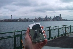
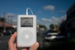
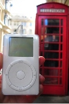

Welcome to the place to show off your iPod, wherever you might be. Wanna join the fun? All you need is any iPod, from the early classic iPod to the latest iPod Nano, the smallest iPod Shuffle to the largest iPod Photo, and a digital camera. Just take a snapshot of your iPod in your favorite location and we'll be glad to post it on myPod.So, what are you waiting for?
Me and my iPod in Seattle! You can see rain clouds and the Space Needle. You can't see the 628 coffee shops.
 Here are some iPod photos around Birmingham. We've obviously got some passionate folks over here who love their iPods. Check out the classic red British telephone box!
